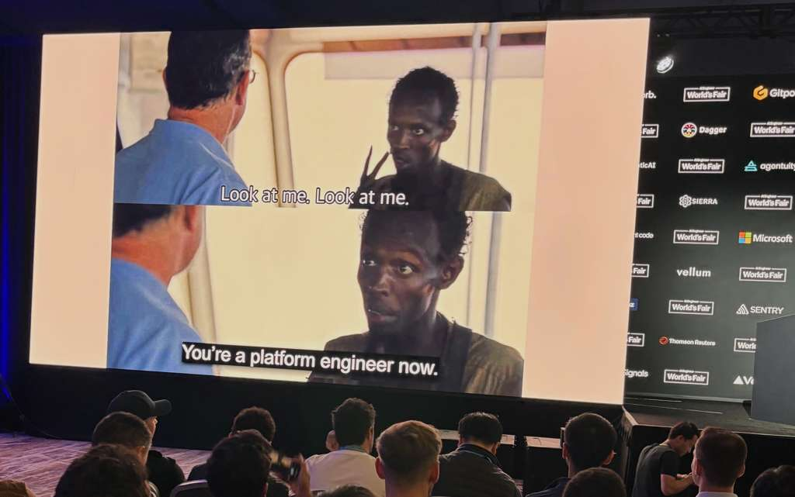

</> A WALKTHROUGH
Designing an ontology-backed notebook for agentic curation -- decisions, tradeoffs, and what I learned.
Brief
"The duty of the man who investigates the writings of scientists, if learning the truth is his goal, is to make himself an enemy of all that he reads, and, applying his mind to the core and margins of its content, attack it from every side."
-- Ibn al-Haytham, 965-1039 AD
The starting point
We anthropomorphize "memory" in agent work. But scientists don't remember everything -- they use notebooks. They write things down with structure so they can find it later and subject it to scrutiny.
Bioinformatics taught us data hygiene 20 years ago. We built ontologies for exactly this reason. The same problem is back.

Solomon Hynes -- AI Engineering World's Fair, 2025
The intellectual motivation
LLMs are so good at semantics that we stop noticing the modeling decisions buried in prompts and markdown.
What's a "contact"? What's a "finding"? What's the relationship between a person and a role?
This framework makes those commitments explicit and evolvable.
Decision one
What most agent stacks do
Save context to MD files or a RAG index. Fine for chat. Falls apart when you need to ask structured questions.
What I chose
TypeDB: typed entities, typed relations, persistent across sessions, queryable across domains. Harder to set up. Worth it.
Decision two
Anatomy of a skill
skills/jobhunt/ SKILL.md // agent instructions schema.tql // typed schema namespace jobhunt.py // CLI commands dashboard/ // optional UI
One agent, many domains. Same notebook, same deploy. Onboarding a new skill is one PR.
Decision three -- the hardest
Most agent stacks silently skip what they can't store. I treat schema rejection as a trigger for evolution.
The loop
Decision four
Claude Code IS the agent runtime. Skills mount via .claude/skills/. I don't ship my own orchestrator.
Tradeoff
Less control over the agent loop.
Win
~10x less code. Deploy is git clone && make build.
An example
LLM instinct
Author sub Person
Alice can't be an author, reviewer, and patient at once. Single inheritance breaks.
BFO / UFO pattern
Alice bears Author
Person is rigid. Role is anti-rigid. Roles come and go. Person stays clean.
This clarity only comes from making commitments explicit. LLM linguistic logic quietly bakes in errors you find at scale.
What's deployed
Outcomes
What worked
CAIS 2026 -- paper accepted at ACM Conference on Agents and Agent Systems
6 working skills across biomedicine, careers, and technical investigation
One codebase -- deploy is git clone && make build
What's still hard
Schema migration -- attribute changes still mean re-ingestion
Concurrent gap PRs -- two fixes can conflict
Proposed vs. committed -- no intermediate schema state yet
None of these are blocking. They're the next phase of work -- and they're the kind of problems that only emerge once the core architecture is working.
Gully Burns -- github.com/GullyBurns/skillful-alhazen